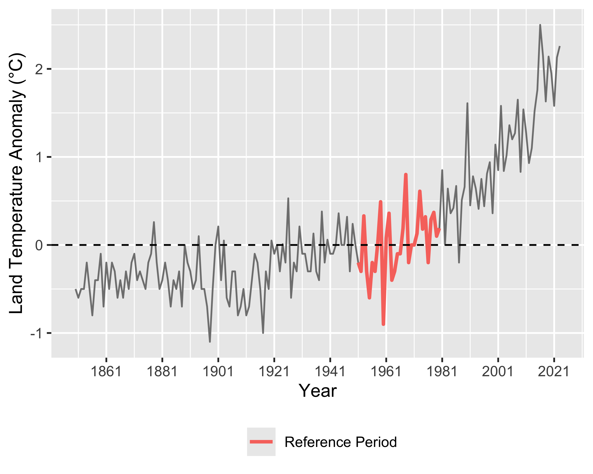
Time-domain analysis of time series
Multi-agent system for smart machining, part I-c
Paolo Bosetti
Time Series
A time series consists of a sequence of observations of a random variable such that the influence of one observation on the following ones cannot be neglected and, therefore, dependence on time becomes essential
Time-series statistics
All regression methods seen so far are based on the assumption that the random variable is \(x\overset{IID}\sim \mathcal{N}(\mu, \sigma^2)\). That is, all observations must be uncorrelated
This assumption is, among other things, the basis for the recommendation to randomize the operating sequence
Suppose we can treat a measurement as a time-dependent signal. It is clear that by reducing the signal sampling interval, sooner or later each sample will be correlated with the previous one
There is therefore a maximum sampling frequency above which every measurement turns out to be autocorrelated, that is, the observations of \(x\) are no longer IID
This situation occurs when the dynamics of the measuring instrument or of the measurand itself, which are always finite, are slower than the time interval at which measurements are taken
Time-series statistics
Consider, for example, the time series in the figure, which reports the difference between the mean temperature of land areas and the corresponding mean value over the period 1951–1980
It is clear that nearby observations are more correlated than distant ones
Moreover, it is clear, and relevant, to evaluate the dependence of the random variable on time in order to make future predictions
Autocovariance and autocorrelation
We have seen how the covariance and correlation operators are used to estimate the independence of two samples
Considering a time-dependent signal \(x=x(t)\), it is interesting to consider the covariance of the signal with itself, shifted in time
We define the autocovariance function \(\gamma(s,t)\) as the function that evaluates the covariance of a time signal with itself evaluated starting at times \(s\) and \(t\): \[ \gamma_x(s, t) = \sigma_{x_s, x_t} = E[(x_s-\mu_s)(x_t-\mu_t)] \]
It is clear that \(\gamma_x(s,s)=\sigma^2(x_s)\)
The autocorrelation function (ACF), consequently, is defined as: \[ \rho_x(s, t) = \frac{\gamma_x(s,t)}{\sqrt{\gamma_x(s,s)\gamma_x(t,t)}} \] and has the advantage of always lying in \([-1,1]\). It is also clear that \(\rho_x(s,s)=1\)
Autocorrelation
If we sample a continuous signal at fixed intervals \(\Delta t\) over a total duration \(T\), we obtain a finite time series of \(N=T/\Delta t\) observations: \(x_{0}=\left<x_1, x_2, \dots, x_N\right>\)
We can extend the definition by setting \(s=t_0 = 0\) as the initial instant of the series and \(t=s+\tau\) as a generic later instant such that \[ \tau = \ell \Delta t \] where \(\ell\) is the delay or lag, and then the autocovariance and autocorrelation for a finite time series become: \[ \gamma_x(\ell) = \frac{\sum_{i=1}^{N-\ell} (x_i - \bar x_0) (x_{i+\ell}-\bar x_\ell) }{N-\ell-2},\quad \rho_x(\ell) = \frac{\gamma_x(\ell)}{\sqrt{\sigma_x(0)\sigma_x(\ell)}} \] where \[ \bar x_0=\frac{1}{N-\ell}\sum\nolimits_{i=1}^{N-\ell} x_i,\quad \bar x_\ell=\frac{1}{N-\ell}\sum\nolimits_{i=\ell}^{N} x_i \]
Autocorrelogram (ACF)
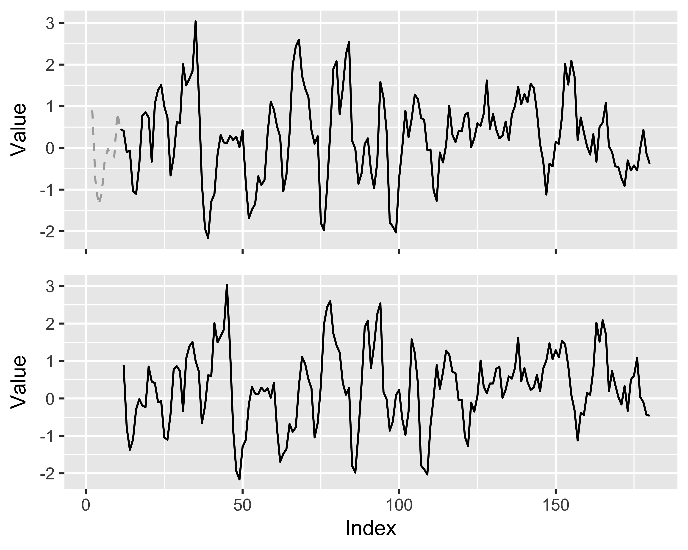
To construct the ACF plot of a time series, the axis is shifted by \(\ell\) samples, neglecting the first \(\ell\) samples in the unshifted series and the last \(\ell\) samples in the shifted one
Then the autocorrelation between the two series is computed
The process is repeated for \(\ell=0, 1, \dots, n\), with \(n\) chosen as a function of the series length, typically at least 50 and in any case no more than half the length of the time series
Autocorrelogram (ACF)
The autocorrelation function \(\rho_x(\ell)\), which is a discrete-valued function, can be plotted to study the maximum lag beyond which the historical series \(x\) is no longer autocorrelated
The figure shows the signal of a microphone recording the sound “AAHH”. The series is clearly periodic every 0.01 s
The autocorrelogram shows high autocorrelation up to \(\ell=4\). Then the pattern is periodic, confirming that the time series is autocorrelated with itself about every 10 lags
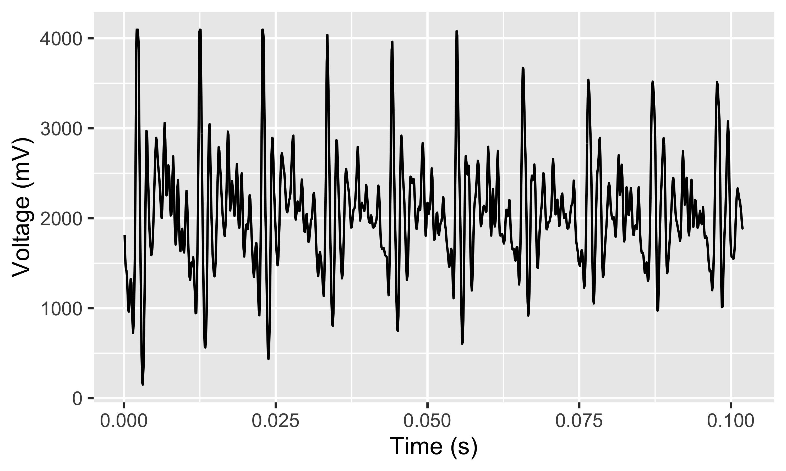
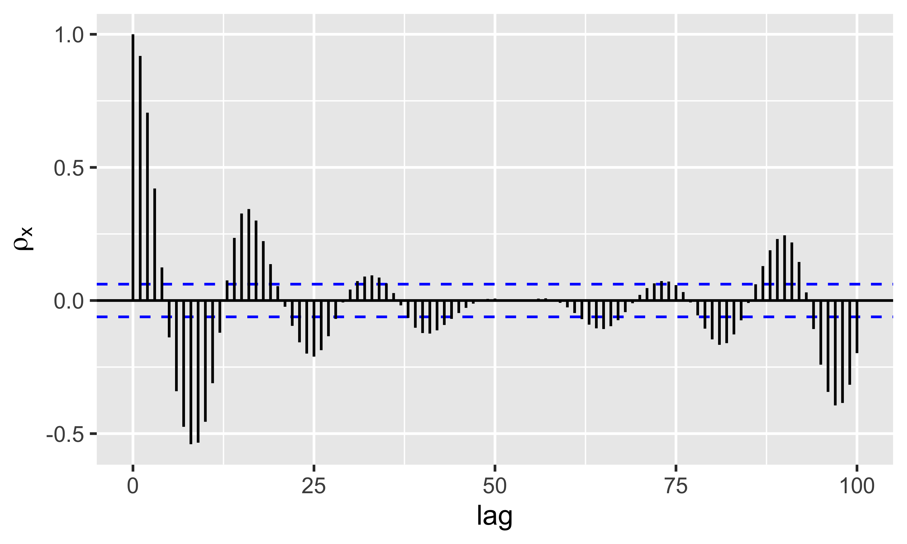
Autocorrelogram (ACF)
Consider the same data as the previous time series, but sampled at random instants
Then \(y\overset{IID}\sim \mathcal{N}(\mu, \sigma^2)\) and therefore \(\rho_y(\ell) = 0~\forall \ell>0\)
As expected, the only ACF value outside the confidence interval is \(\rho_x(0)\)
In this case one also says that the time series is a random walk
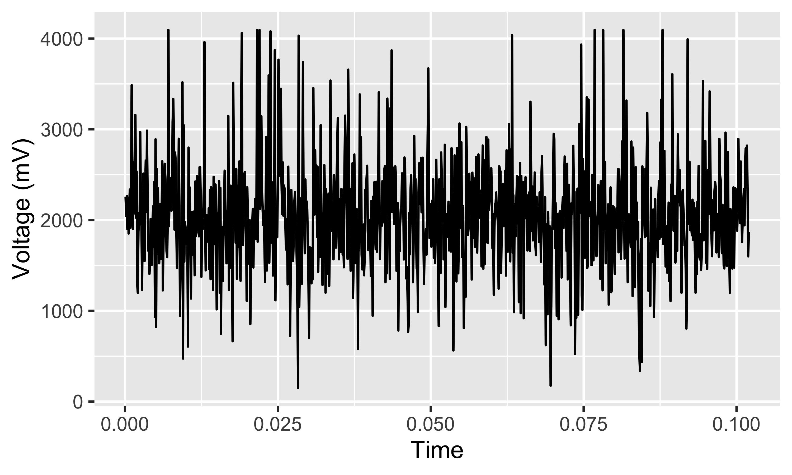
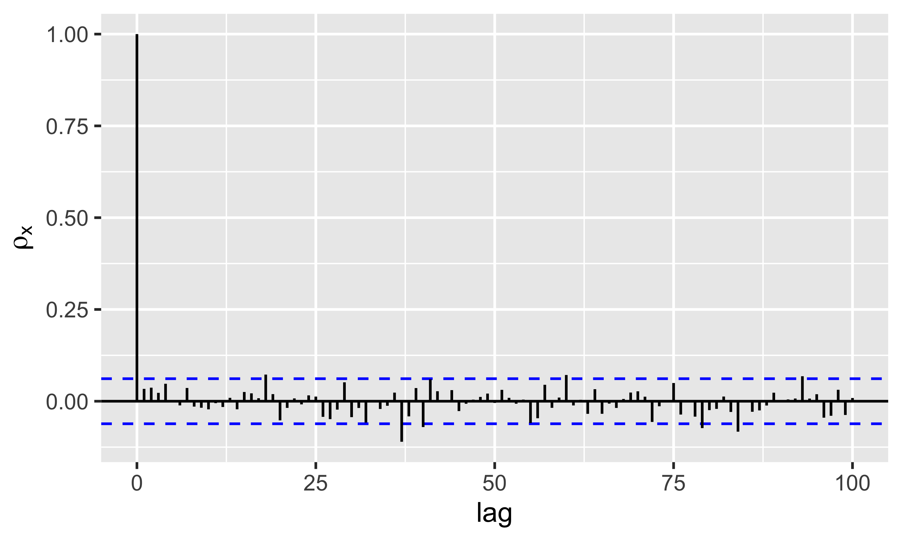
Stationary time series
A time series may or may not be stationary. The following are defined:
- Time series stationary in the wide sense
- It is a time series for which the probabilistic behavior of any collection of values \(\left<x_{t_1}, x_{t_2},\dots, x_{t_k}\right>\) is identical to that of the shifted collection \(\left<x_{t_1+h}, x_{t_2+h},\dots, x_{t_k+h}\right>\), that is: \[ \mathrm{Pr}(x_{t_1}\leq c_1, \dots, x_{t_k}\leq c_k) = \mathrm{Pr}(x_{t_1+h}\leq c_1, \dots, x_{t_k+h}\leq c_k). \]
- Time series stationary in the strict sense
- It is a time series for which the mean value of the series is constant, independent of time, and the autocovariance function \(\gamma(s,t)\) depends on \(s\) and \(t\) only through their difference \(|s-t|\)
For a wide-sense stationary series one may assume \(\sigma_x(0)=\sigma_x(\ell)=\sigma_x\) and \(\bar x_0=\bar x_\ell\) and, therefore, \(\rho_x(\ell) = \gamma_x(\ell)/\sigma_x\)
Stabilization
- Time series stationary at least in the wide sense are easier to handle
- It is therefore useful to try to stabilize the time series by separating it into a trend term \(x_t\) plus a stationary term \(x_s\)
- stabilization can be done in two ways:
- detrending by linear regression: \(x_t = x_{l,t} + x_{s,t}\), where \(x_{l,t} = a + bt\) and, therefore, \(x_{s,t}\) is the residual series of the linear regression of \(x_t\)
- detrending by differencing
- The stabilized time series can then be analyzed and then transformed back by the inverse operation:
- adding the trend term
- integration, that is cumulative sum
Stabilization (example)
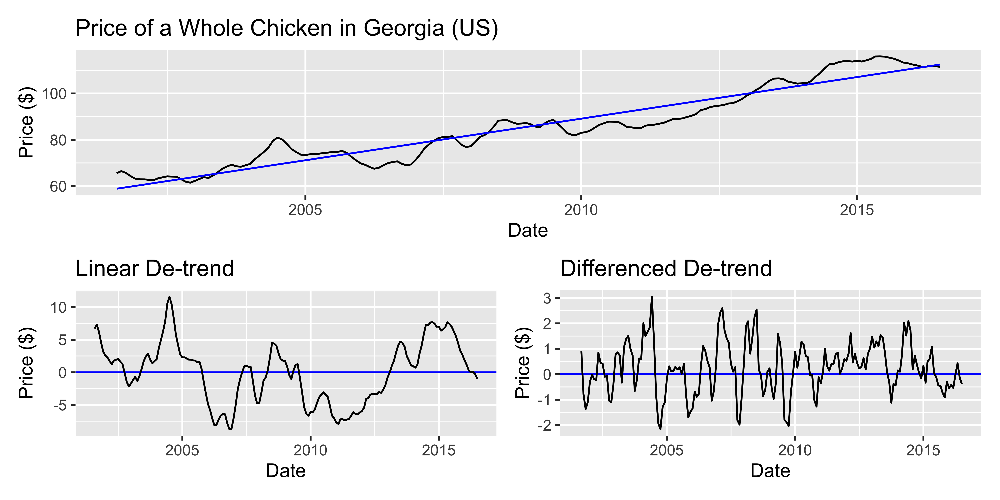
Differencing operators
In general, stabilization by differencing gives better results and is also more practical: if the differenced time series is not stable, the differencing order can be increased until stability is reached
How is a time series differenced?
The following are defined:
- Backshift operator: this is the operator \(B^n\) such that \(B^n x_t := x_{t-n}\)
- Difference operator: this is the operator \(\nabla\) such that \(\nabla x_t := x_t - x_{t-1}=(1-B)x_t\). It follows that \(\nabla^dx_t=(1-B)^dx_t\), and therefore for example \(\nabla^2x_t=(1-B)^2x_t=x_t-2x_{t-1}+x_{t-2}\)
So, for example, differencing \(\nabla^2x_t\) is the discrete equivalent of the second derivative \(\frac{d^2}{dt^2}x(t)\) for the continuous function \(x(t)\)
Stabilization and ACF
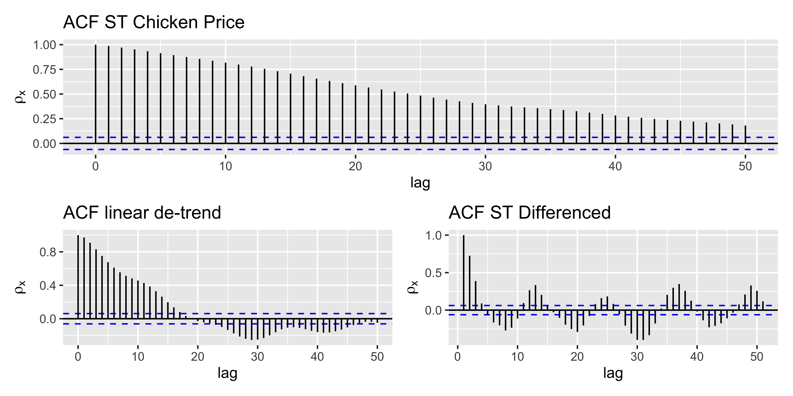
Stabilization and ACF
- The ACF of a non-stabilized series always shows correlation even at high lags
- The ACF of the residual series from a linear regression decreases faster, but still keeps correlation even at high lags
- The ACF of the differenced series, moreover, damps out very quickly, the lags 1, 2, 3, … should be exponential, after which it shows harmonic oscillations, indicating a periodicity in the original time series
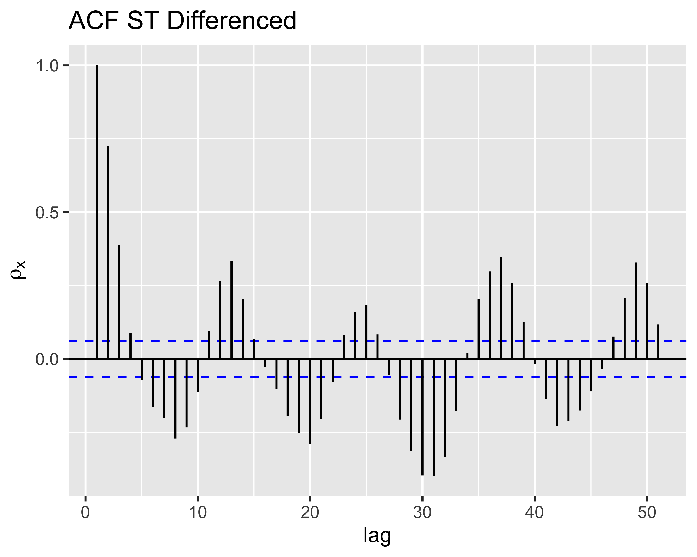
Statistical models
Classical regression applied to time series is often insufficient. For example, in the case of chicken price, autocorrelation analysis shows a cyclic behavior that classical regression cannot highlight
It is therefore necessary to develop techniques that allow the details of a time series to be modeled, in particular by also taking into account the autocorrelation that can characterize time series
AR models — definition
An Auto-Regressive (AR) model expresses a given observation \(x_t\) at time \(t\) as a linear combination of \(p\) previous values \(x_{t-1}, x_{t-2},\dots,x_{t-p}\). An AR model of order \(p\), abbreviated as \(\mathrm{AR}(p)\), has the form: \[ x_t=\phi_1 x_{t-1} + \phi_2 x_{t-2}+\dots+\phi_p x_{t-p} + w_t \label{eq:AR} \]
- \(x_t\) is wide-sense stationary and \(w_t\sim\mathcal{N}(0, \sigma^2_w)\)
- \(\phi_1, \phi_2,\dots,\phi_p\) are constants and \(\phi_p\neq0\)
If the mean of \(x_t\) is not zero, \(x_t\) is replaced with \(x_t - \mu\) to obtain: \[ \begin{align} x_t-\mu&=\phi_1( x_{t-1}-\mu) + \phi_2 (x_{t-2}-\mu)+\dots+\phi_p (x_{t-p}-\mu) + w_t \\ x_t&=\alpha + \phi_1 x_{t-1} + \phi_2 x_{t-2}+\dots+\phi_p x_{t-p} + w_t,~~~\alpha=\mu(1-\phi_1-\phi_2-\dots-\phi_p) \end{align} \]
AR models — regression
Recalling the definition of the backshift operator, the definition of \(w_t\) can be written as:
\[ (1-\phi_1 B - \phi_2 B^2 -\dots-\phi_p B^p)x_t=w_t \] o ancora più concisamente come:
\[ \Phi_p(B)x_t=w_t \] where \(\Phi_p(B):=1-\phi_1B-\phi_2B^2-\dots-\phi_pB^p\) is called the autoregressive operator.
Performing the regression of an \(\mathrm{AR}(p)\) model on a historical series \(x_t\) therefore means fitting the model \(\Phi_p(B)\hat{ x_t}=w_t\) by identifying the coefficients of \(\Phi_p(B)\) that minimize the mean squared residuals, where the residuals are \(\varepsilon_t = x_t - \hat{ x_t} = x_t - \Phi_p^{-1}(B)w_t\), assuming the inverse \(\Phi_p^{-1}(B)\) exists.
MA models — definition
Alternatively, one can imagine the case in which the generic observation \(x_t\) is expressed as a linear combination of the disturbance acting on the previous \(q\) observations. An MA model of order \(q\), abbreviated as \(\mathrm{MA}(q)\), is defined as \[ x_t = w_t + \theta_1 w_{t-1} + \theta_2 w_{t-2} + \dots + \theta_q w_{t-q} \]
- \(w_t\sim\mathcal{N}(0, \sigma_w^2)\)
- \(\theta_1, \theta_2,\dots,\theta_q\) are constant parameters with \(\theta_q\neq0\)
MA models — regression
Similarly to the \(\mathrm{AR}(p)\) case, for \(\mathrm{MA}(q)\) it is possible to define the moving-average operator of order \(q\): \[ \Theta_q(B)=(1+\theta_1 B+\theta_2 B^2+\dots+\theta_q B^q) \] such that the equation for \(x_t\) can be written as:
\[ x_t=\Theta_q(B)w_t \]
As above, regressing an \(\mathrm{MA}(q)\) model onto a historical series \(x_t\) means identifying the terms of \(\Theta_q(B)\) that minimize the mean squared residuals, defined as \(\varepsilon_t = x_t - \hat{x_t} = x_t - \Theta_q(B)\), note that this time there is no inverse.
MA models and ACF
An \(MA(q)\) time series has a memory extending up to lag \(q\), in the sense that innovations at distances greater than \(q\) have no effect on the last observation
Therefore, given an \(MA(q)\) time series, one can often identify the order from its ACF by counting the peaks after the one at lag 0:
- three peaks outside the confidence band mean an \(MA(3)\) model
- the signs of the peaks correspond to the signs of the coefficients
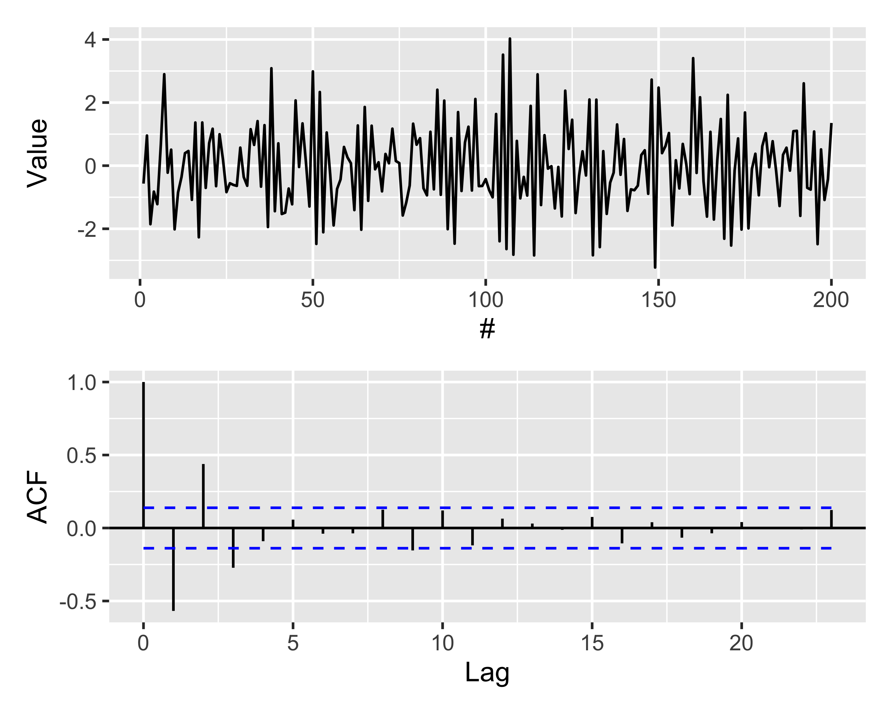
MA models and ACF
If instead the time series is of type \(AR(p)\), each observation depends on the innovation and on all previous observations, recursively
In this case the autocorrelogram will show an exponential decay possibly followed by harmonic oscillations
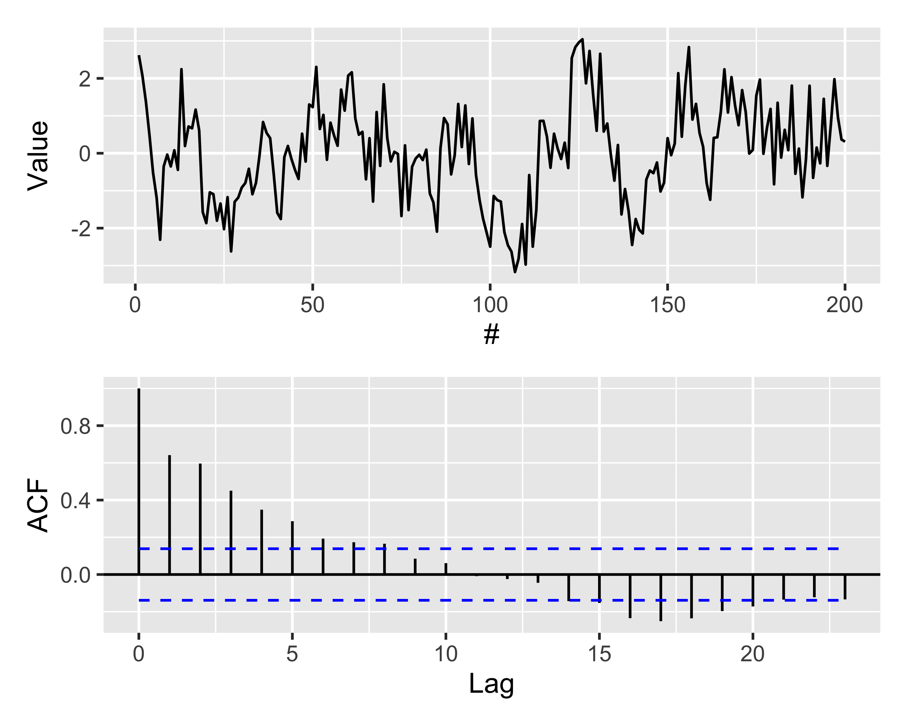
AR models and PACF
For models of type \(AR(p)\) it is still possible to identify the order through the partial autocorrelation function, or PACF, defined as follows:
\[ \begin{align} \mathrm{PACF}_1 &= \mathrm{ACF}(z_{t+1}, z_t) \\ \mathrm{PACF}_k &= \mathrm{ACF}(z_{t+k} - \hat{z_{t+k}}, z_t - \hat{z_t}),~~~k\geq2 \\ \end{align} \] where \(\hat{z_{t+k}}\) and \(\hat{z_t}\) are linear combinations of \(\{z_{t+1}, z_{t+2},\dots,z_{t+k-1}\}\) that minimize the mean squared error of \(z_{t+k}\) and \(z_t\), respectively
AR models and PACF
In general, therefore, if the ACF shows an infinite memory, AR model, and the PACF shows few peaks, the number of peaks is the order of the AR model
Warning: peaks after the first cut-off are not considered, that is, the lag at which the autocorrelation falls below the confidence limit for the first time
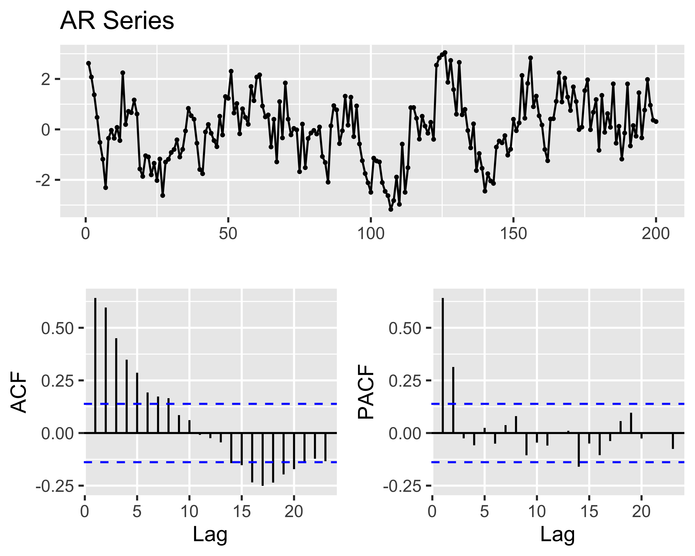
MA models and PACF
Comparing both ACF and PACF
- pure noise: ACF and PACF are zero for lag greater than 0
- \(AR(p)\): ACF decreases slowly, PACF is non-zero for lags less than or equal to \(p\), zero otherwise
- \(MA(q)\): ACF shows \(q\) peaks; if \(PACF(1) > 0\), PACF oscillates to 0, otherwise it decays geometrically to 0

ARMA models
The obvious extension comes from combining the \(\mathrm{AR}(p)\) and \(\mathrm{MA}(q)\) models
An ARMA model of order \(p,q\), abbreviated as \(\mathrm{ARMA}(p,q)\), is defined as:
\[ x_t=\phi_1 x_{t-1} + \phi_2 x_{t-2}+\dots+\phi_p x_{t-p} + w_t + \theta_1 w_{t-1} + \theta_2 w_{t-2} + \dots + \theta_q w_{t-q} \] con \(\phi_p\) e \(\theta_q\) non nulli, ovvero, più brevemente: \[ \Phi_p(B)x_t=\Theta_q(B)w_t \]
MA models and PACF
Comparing both ACF and PACF
- pure noise: ACF and PACF are zero for lag greater than 0
- \(AR(p)\): ACF decreases slowly, PACF is non-zero for lags less than or equal to \(p\), zero otherwise
- \(MA(q)\): ACF shows \(q\) peaks; if \(PACF(1) > 0\), PACF oscillates to 0, otherwise it decays geometrically to 0
- \(ARMA(p,q)\): ACF shows \(q\) peaks; PACF decays geometrically to 0 only after lag \(p\)
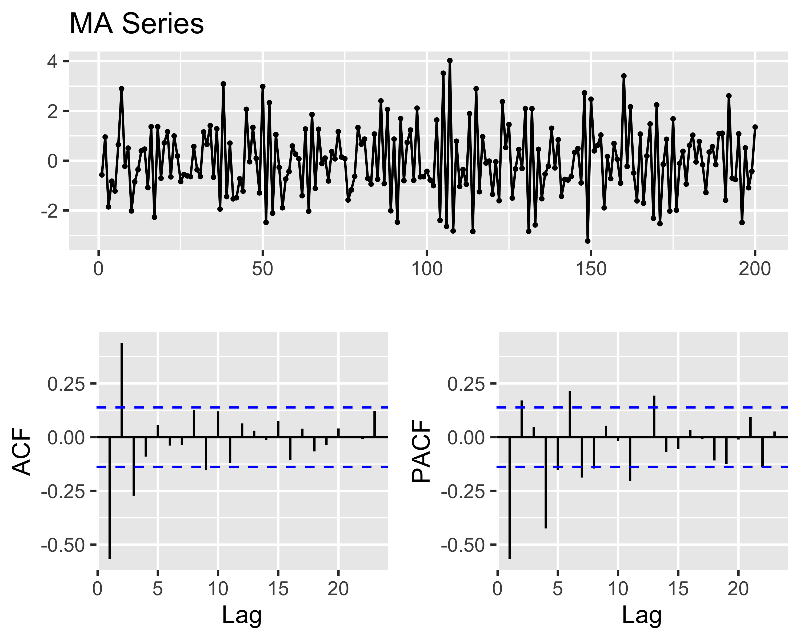
ARIMA models
The \(\mathrm{ARMA}(p,q)\) processes are suitable only for describing stationary series in the wide sense
We have seen, however, that a non-stationary process can be made stationary by differencing of a suitable degree \(d\)
A process \(x_t\) is called \(\mathrm{ARIMA}(p,d,q)\) when \(\nabla^d x_t = (1-B)^d x_t\) is an \(\mathrm{ARMA}(p,q)\) process
In general, when \(E(\nabla^dx_t)=0\), the \(\mathrm{ARIMA}(p,d,q)\) process can be written as: \[ \Phi_p(B)\nabla^dx_t=\Theta_q(B)w_t \] If instead the expected value \(E(\nabla^dx_t)=\mu\), then: \[ \Phi_p(B)\nabla^dx_t=\delta + \Theta_q(B)w_t,~~~\delta=\mu(1-\phi_1-\dots-\phi_p) \]
Stability and uniqueness of models
Consider an \(\mathrm{AR}(1)\) model: we can expand the recursive formula as: \[ \begin{align} x_t =& \phi x_{t-1}+w_t = \phi(\phi x_{t-2}+w_{t-1}) + w_t \\ =& \sum_{j=0}^{+\infty}\phi^j w_{t-j} \end{align} \] It is therefore clear that the time series \(x_t\) is stable only if \(|\phi|<1\)
In the general case of the \(\mathrm{AR}(p)\) model, the stability condition is: \[ \left|\sum_{i=1}^p \phi_i\right| < 1 \label{eq:ARstab} \] An unstable AR model is also called anti-causal, because it can be shown that to be stabilized it requires knowledge of future observations
Stability and uniqueness of models
For an \(\mathrm{MA}(1)\) model, instead, consider two models: \[ \begin{align} x_t &= w_t + \theta w_{t-1}, ~w_t\sim\mathcal{N}(0, 1) \\ y_t &= \nu_t + 1/\theta \nu_{t-1}, ~\nu_t\sim\mathcal{N}(0, \theta^2) \end{align} \] It is clear that \(x_t\) and \(\nu_t\) have the same ACF and are indistinguishable, since we do not know the innovations \(w_t\) and \(\nu_t\) but only the two series. It can be shown that the result is general, that is, it does not depend on the order \(q\).
It is therefore necessary to choose one of the two alternative forms. To determine which one, we rewrite the series as \(w_t=-\theta x_{t-1}+x_t\), which has the same form as \(\mathrm{AR}(1)\). We can then choose the alternative that satisfies the same stability criterion: \[ \left|\sum_{i=1}^q \theta_i\right| < 1 \] This alternative is called invertible
Stability and uniqueness of models
In general, it can be shown that the criteria seen above correspond to imposing the requirement that the complex roots of the polynomials \[ \begin{align} \Phi_p(z)&=1-\phi_1 z-\phi_2 z^2 - \dots -\phi_p z^p \\ \Theta_q(z)&=1+\theta_1 z+\theta_2 z^2 + \dots +\theta_q z^q \end{align} \] are all strictly outside the unit circle in the complex plane
For example: \(\mathrm{ARMA}(2,2)\) with \(\Phi_2(z)= 1 + 0.9z + 0.1z^2\) and \(\theta_q(z) = 1 + 2z + 15z^2\):
That is, the AR term is not causal and the MA term is not invertible, but \(\theta_q(z) = 1 + 1/2z + 1/15z^2\) would be
Redundancy
Consider the process \(x_t = w_t\), with \(w_t\sim\mathcal{N}(0, 1)\): this is obviously pure random noise
Multiply both sides by \(1-0.5B\) to obtain: \[ x_t = 0.5x_{t-1}-0.5w_{t-1} + w_t \] which looks like an \(\mathrm{ARMA}(1,1)\) process but is obviously still the same random noise. How do we distinguish these cases?
- factorize the polynomials \(\Phi_p\) and \(\Theta_q\)
- remove the common factors
- recombine the factors to obtain the non-redundant model
In R one can still use polyroot()
Redundancy
For example, consider the process \(x_t=0.4x_{t-1}+0.45x_{t-2}+w_t + w_{t-1}+0.25w_{t-2}\), which using the operator \(B\) becomes: \[ (1-0.4B-0.45B^2)x_t = (1+B+0.25B^2)w_t. \]
In this form the process looks like \(\mathrm{ARMA}(2,2)\), however we can factor the two polynomials using polyroot() to compute the roots:
Redundancy
As can be seen, one can write \[ \begin{align} \Phi_p(B)&=(1-0.9B)(1+0.5B) \\ \Theta_q(B)&=(1+0.5B)^2 \end{align} \]
Removing the common factor \((1+0.5B)\) we obtain the model \[ x_t=0.9x_{t-1}+0.5w_{t-1}+w_t \] which is an \(\mathrm{ARMA}(1,1)\).
Therefore, in addition to the criteria of causality and invertibility, one must add the criterion of non-redundancy of the parameters, which is checked by removing every common factor from the factorization of the polynomials \(\Phi_p(B)\) and \(\Theta_q(B)\).
(S)ARIMA regression
From what has been said above, a process, or time series, \(x_t\) can be regressed by means of an ARIMA model by identifying its parameters through minimization of squared deviations
However, before regression it is necessary to define suitable indices \(p, d,q\), such that there is neither underfitting nor overfitting
In some cases, moreover, series are periodic: besides a possible trend they are also subject to cyclic oscillating patterns. In these cases:
- the time series is made stationary by differencing
- a low-frequency contribution, called seasonal, is separated from a high-frequency contribution
- the seasonal and non-seasonal contributions are regressed separately as two distinct and superposed ARIMA processes: this regression is called Seasonal ARIMA, or SARIMA
(S)ARIMA regression
Moreover, we have seen that ARIMA models are based on the assumption of time series stationary in the wide sense
Therefore, it is necessary that both the mean value and the variance are constant over time
- The mean is stabilized by differencing
- The variance can be stabilized through Box-Cox transformations
Therefore, in the most general case, the model is \(\mathrm{SARIMA}(p, d, q, p_s, d_s, q_s, \lambda)\)
Before performing a regression it is therefore necessary to define the values of the seven parameters, avoiding overfitting and underfitting
- \(d, d_s\) can be identified by trial, gradually increasing the values, first \(d\) and then \(d_s\), until the ACF is satisfactory
- the other terms can be identified by checking the goodness of the regression over a grid of combinations and evaluating a suitable figure of merit
Akaike Information Criterion
The most used figure of merit in SARIMA regression is the Akaike Information Criterion, or AIC
In general, the quality of a regression with \(k\) parameters is measured by the sum of squared residuals, \(SS_E(k)\), normalized by the sample size \(n\): \[ \hat{\sigma_k^2} = \frac{SS_E(k)}{n} \] This indicator is called the Maximum Likelihood Estimator, MLE. The smaller this value is, the better the model fits the data
However, increasing \(k\) decreases the MLE, at the risk of overfitting. For this reason, Akaike proposed penalizing the MLE with the number of parameters: \[ \mathrm{AIC}=\log(\hat{\sigma_k^2})+\frac{n+2k}{n} \] The AIC must obviously be minimized
Other information criteria
Besides the AIC there are also the corrected AIC and the Bayesian Information Criterion, or BIC:
- Corrected AIC: \(\mathrm{AIC}_c = \log(\hat{\sigma_k^2})+\frac{n+k}{n-k-2}\)
- BIC: \(\mathrm{BIC} = \log(\hat{\sigma_k^2})+\frac{k\log(n)}{n}\)
The BIC penalizes model size more strongly, and is therefore preferred for very large samples, thousands of observations, for which AIC and AICc would tend to favor unnecessarily complex models, too many parameters, overfitting
Like the AIC, AICc and BIC must also be minimized
Regression
The R library forecast provides the function auto.arima(), which evaluates the indicators over a grid of combinations of the seven parameters and returns the best regression:
ARIMA(2,1,2)(1,1,1)[12] : -890.0518
ARIMA(0,1,0)(0,1,0)[12] : -845.0766
ARIMA(1,1,0)(1,1,0)[12] : -885.6939
ARIMA(0,1,1)(0,1,1)[12] : -896.9901
ARIMA(0,1,1)(0,1,0)[12] : -860.1426
ARIMA(0,1,1)(1,1,1)[12] : -895.2944
ARIMA(0,1,1)(0,1,2)[12] : -895.3558
ARIMA(0,1,1)(1,1,0)[12] : -889.5331
ARIMA(0,1,1)(1,1,2)[12] : Inf
ARIMA(0,1,0)(0,1,1)[12] : -880.0685
ARIMA(1,1,1)(0,1,1)[12] : -896.1031
ARIMA(0,1,2)(0,1,1)[12] : -895.698
ARIMA(1,1,0)(0,1,1)[12] : -893.2768
ARIMA(1,1,2)(0,1,1)[12] : -894.0835
Best model: ARIMA(0,1,1)(0,1,1)[12] Series: AirPassengers
ARIMA(0,1,1)(0,1,1)[12]
Box Cox transformation: lambda= -0.2947046
Coefficients:
ma1 sma1
-0.4355 -0.5847
s.e. 0.0908 0.0725
sigma^2 = 5.856e-05: log likelihood = 451.59
AIC=-897.18 AICc=-896.99 BIC=-888.55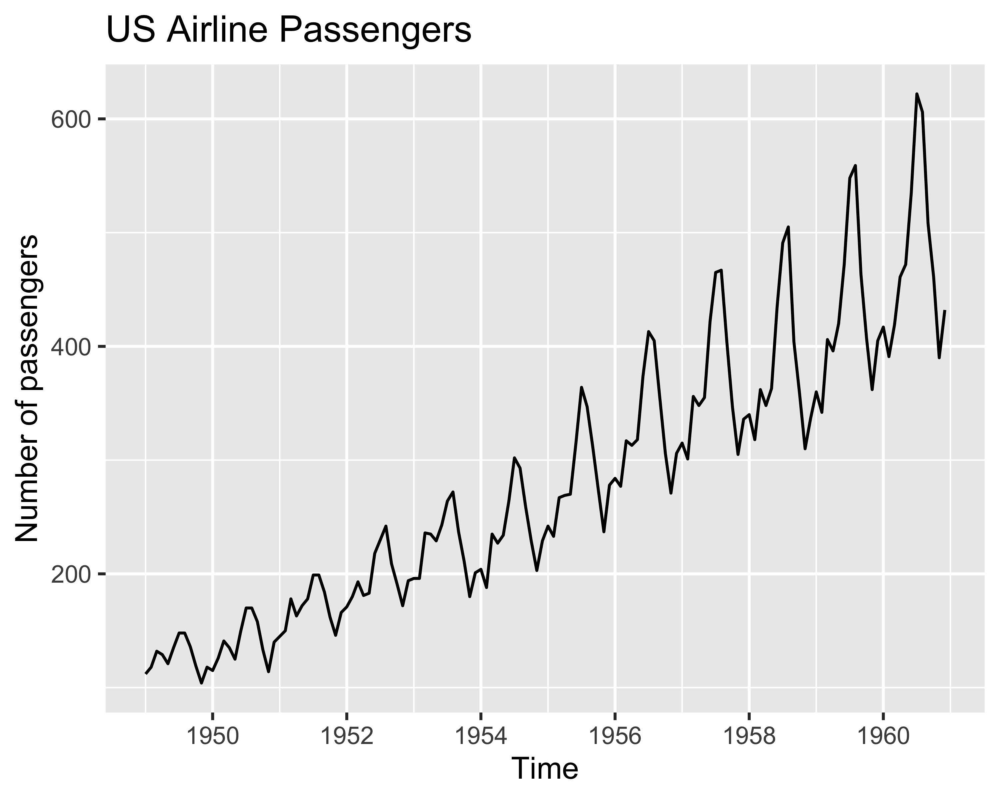
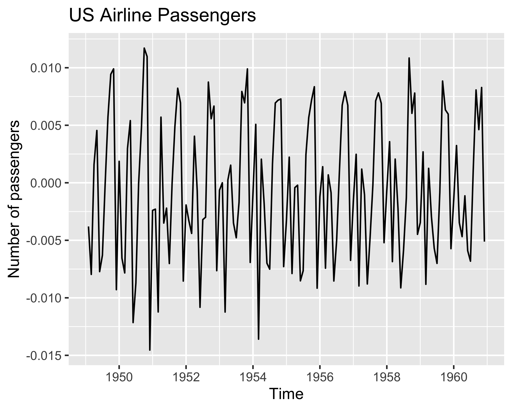